This 1-point perspective artwork is a detailed exploration of geometric depth and spatial realism, employing the technique of single vanishing point perspective to create a three-dimensional illusion on a two-dimensional plane.
The primary goal of this project was to illustrate the principles of 1-point perspective, demonstrating how lines converge towards a single point on the horizon to create the illusion of depth and space.
The finished piece successfully demonstrates the principles of 1-point perspective, providing a visually striking example of how this technique can be used to create depth and realism. The project showcases the effective use of both manual and digital techniques to achieve a polished and detailed final product.
This 1-point perspective project highlights the importance of planning, precision, and the combination of traditional and digital methods in creating compelling artworks. The principles demonstrated in this project are foundational for artists and designers looking to enhance their understanding of perspective and spatial composition.
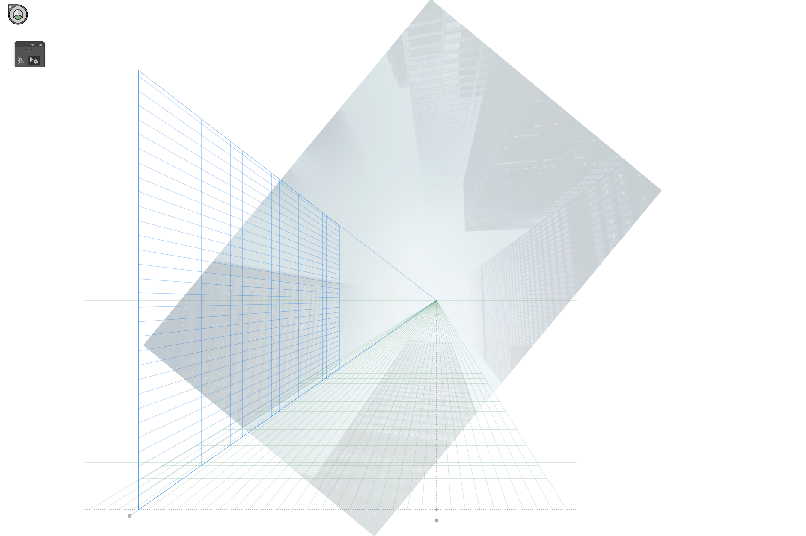
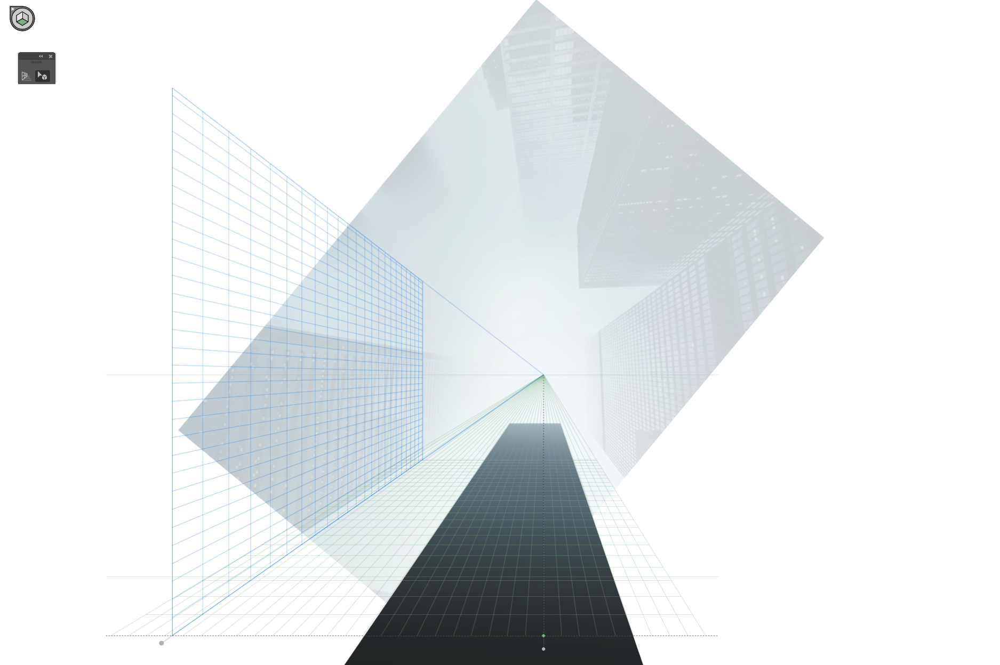
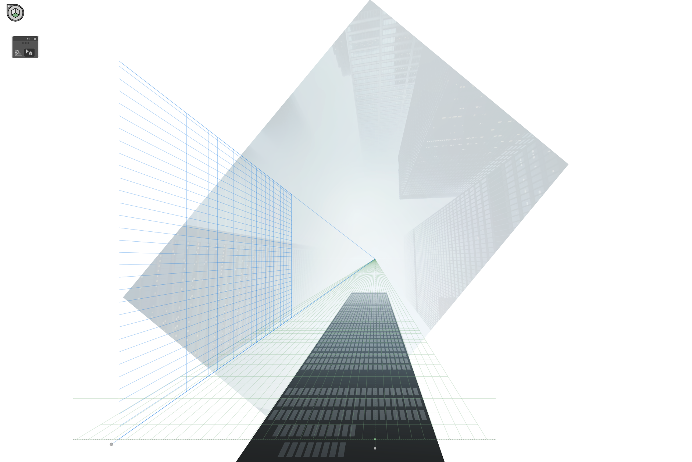
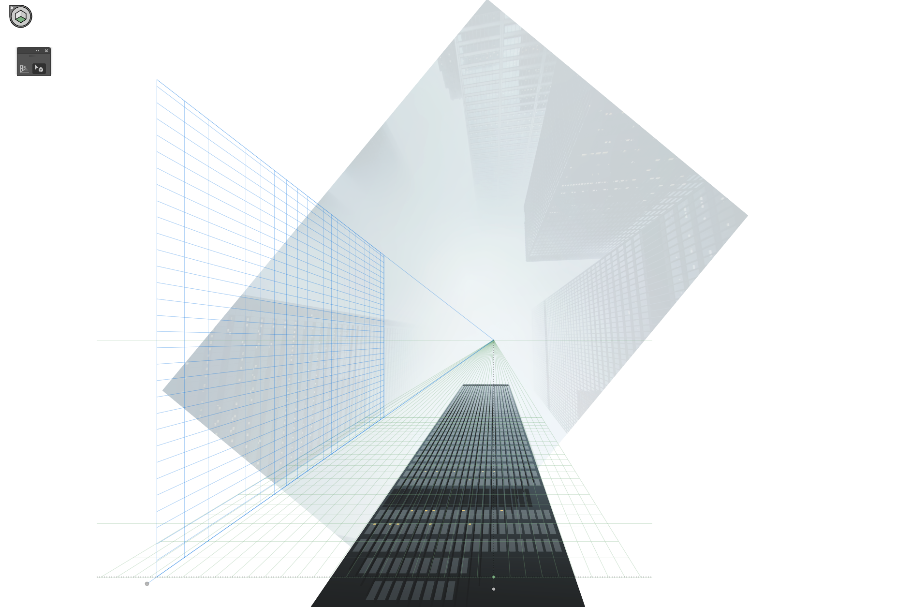
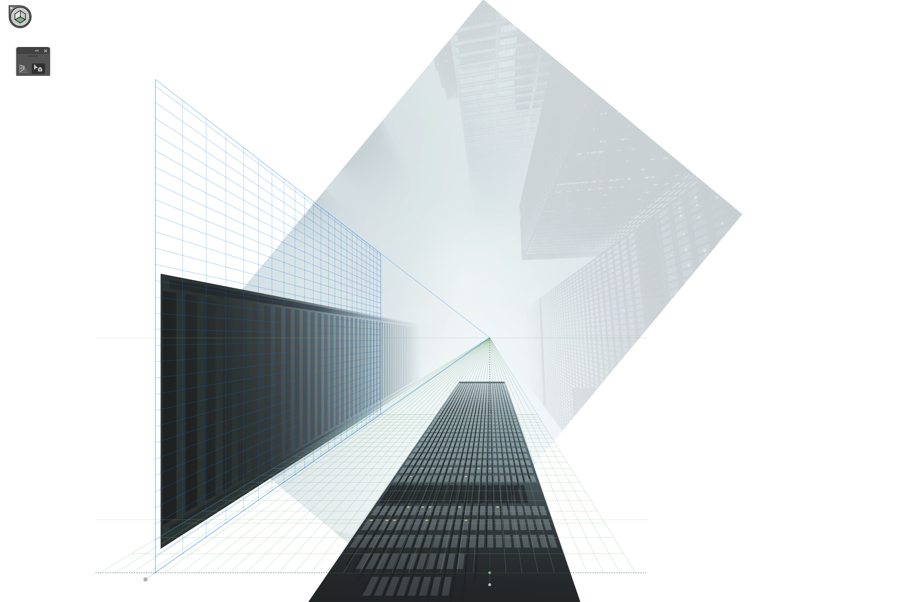
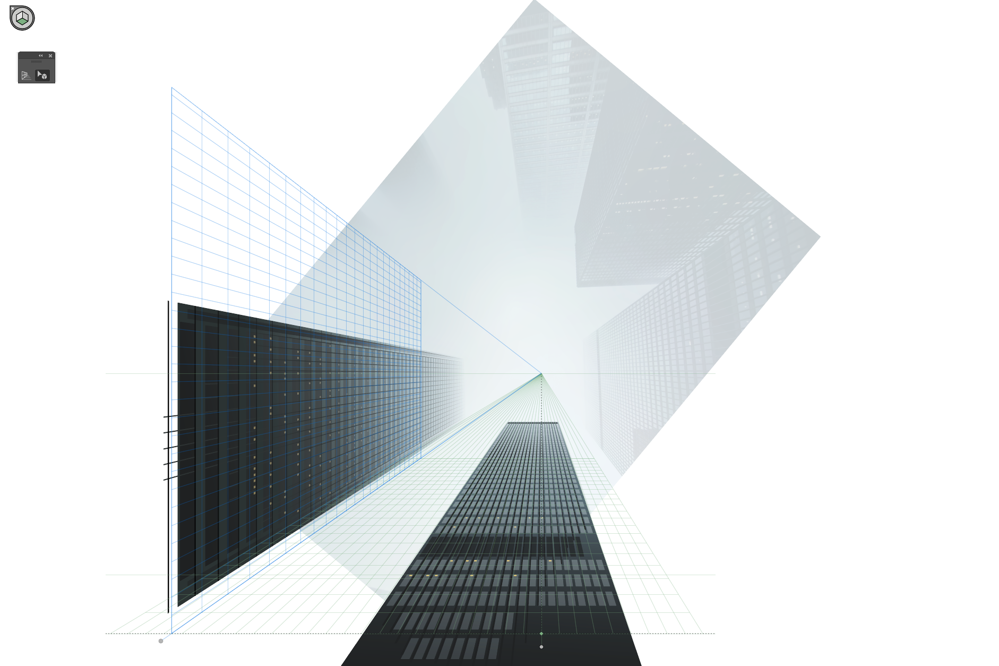
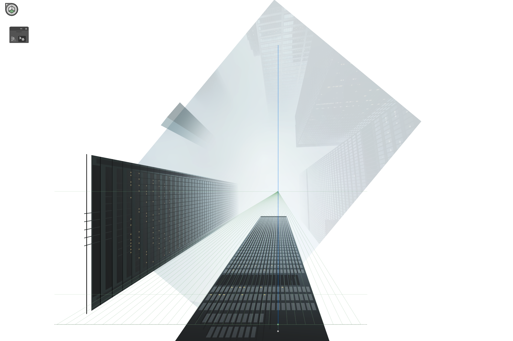
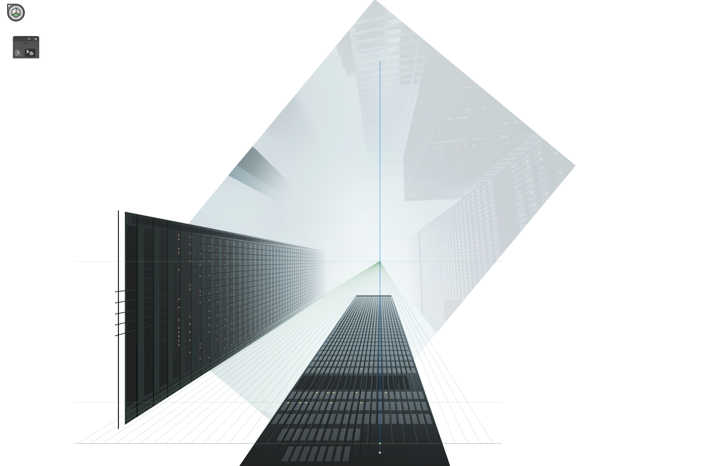
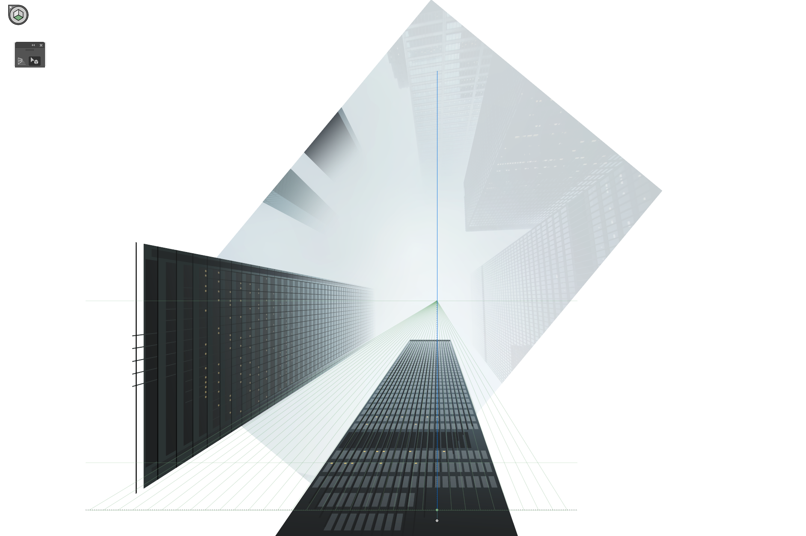
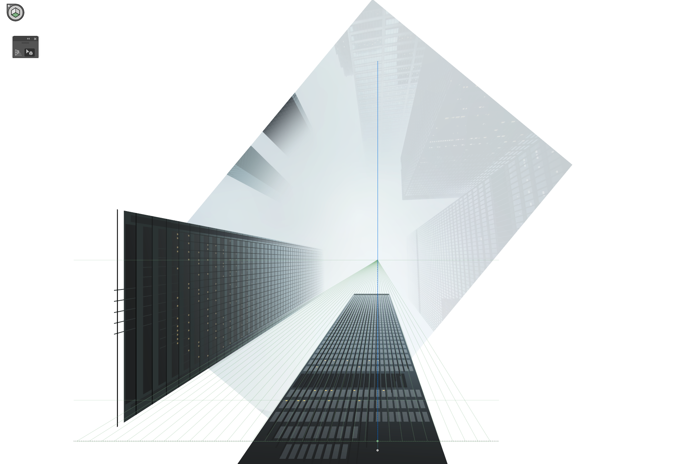
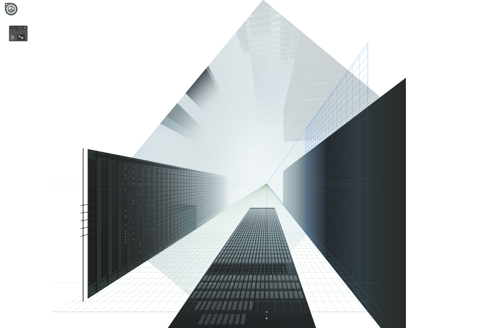
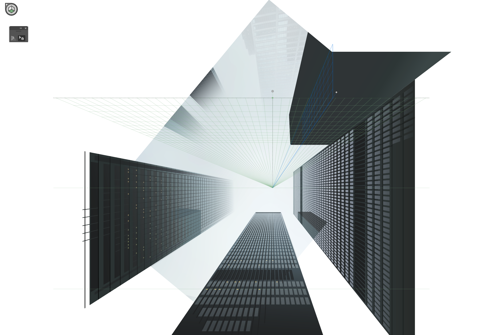
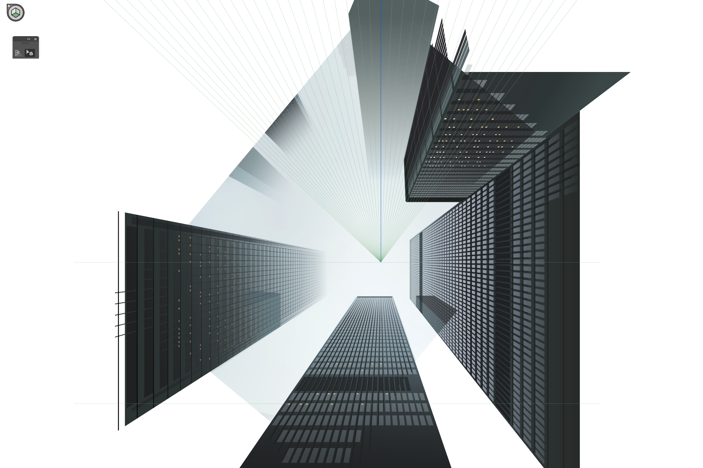
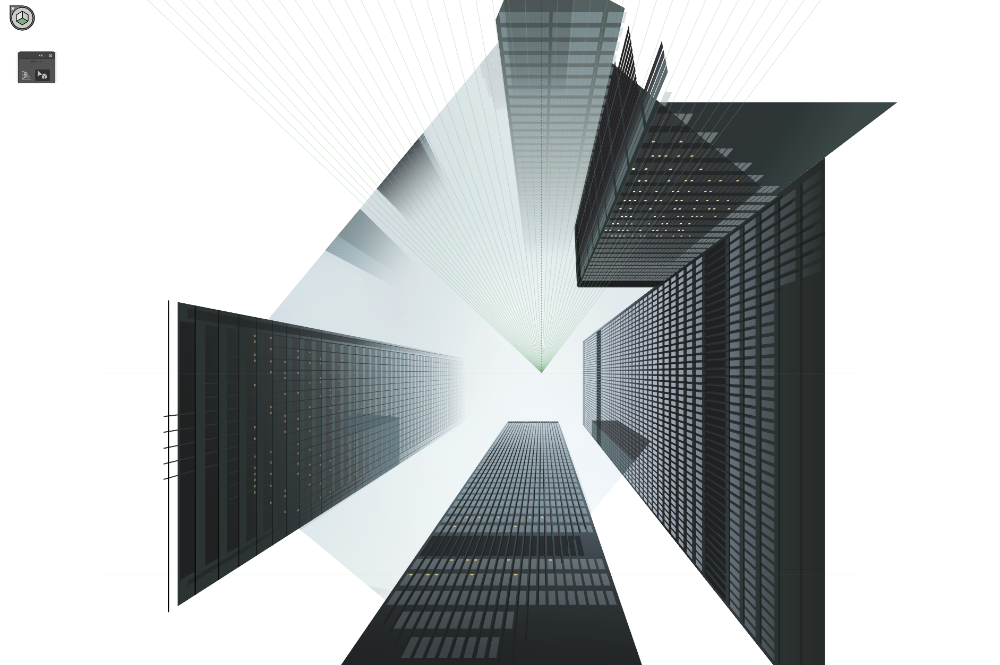